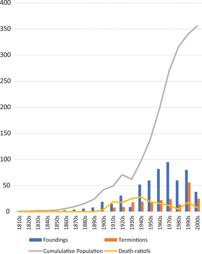
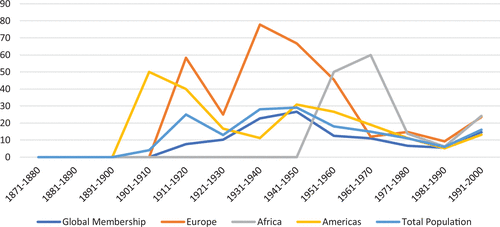
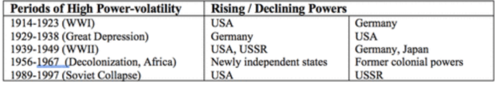
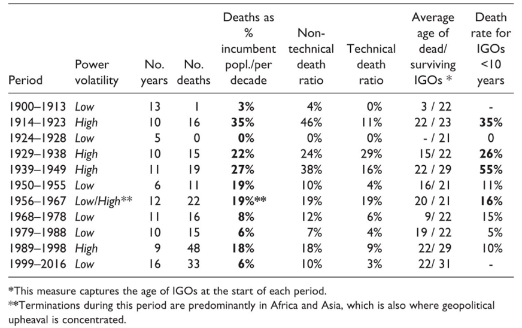
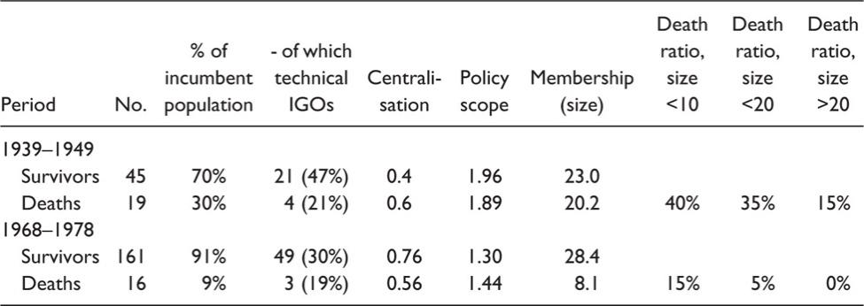
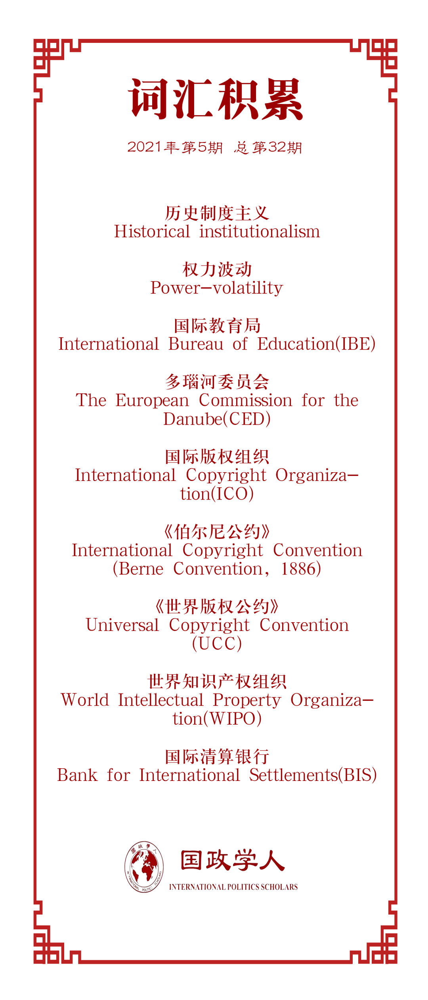

收录于合集

作品简介
【作者】 Mette Eilstrup-Sangiovanni，剑桥大学国际关系系教授，其研究领域为国际组织、国际关系理论与国际安全。
【编译】 胡瑞琨（国政学人编译员，爱丁堡大学国际法学硕士）
【校对】 聂涵琳
【审核】 杨稚珉
【排版】 黄晨蕊
【美编】 方引弓
【来源】 Eilstrup-Sangiovanni, Mette. “What Kills International Organisations? When and Why International Organisations Terminate.” European Journal of International Relations 27, no. 1 (March 2021): 281-310.https://doi.org/10.1177/1354066120932976.
【归档】 《国际关系前沿》2021年第5期，总第32期。
期刊简介
《欧洲国际关系杂志》（ European Journal of International Relations ）是欧洲政治研究联盟国际关系常设小组（the Standing Group on International Relations of the European Consortium for Political Research, SGIR）的同行评审旗舰期刊, 由SGIR和欧洲国际研究协会组成的联合委员会共同管理。根据Journal Citation Reports显示，2019年该期刊的影响因子为3.474。
是什么杀死了国际组织？国际组织会在何时为何而终结？ ****
What kills international organisations?
When and why international organisations terminate？
Mette Eilstrup-Sangiovanni
内容提要
本研究回答了国际组织终结的原因和条件。当前已有的研究成果为国际机制及其实体组织的创建、设计和有效性提供了丰富的解释，但几乎没有研究国际组织终结的原因。然而，了解国际组织存续的条件，必须解释其存续失败的原因。本文结合人群统计分析和详细的历史案例研究，制定并测试了“国际组织死亡”理论。本文分析基于1815年至2016年期间的原始数据集，发现自1815年以来，外来冲击是国际组织终结的主要原因，而新成立的、成员人数少的以及缺乏集中结构的组织最有可能首当其冲。
文章导读
01
引文
为什么有些国际组织会死亡？什么样的国际组织会死亡？没有人会期待公共机构死亡。基于高昂谈判成本和制度化合作带来日益增长的回报，功能主义者认为在可行范围内国家将维持现有制度，即使在原有制度条件消失后的很长一段时间内这些制度依然存在。建构主义者强调规范性和认知性偏见所导致的“能力陷阱”和机制现状偏差。历史制度主义者援引积极反馈和制度锁定效应，而组织理论则强调国际秘书处对官僚资源进行战略性利用以促使其与时俱进。这些观点都基于一个共同的假设，即制度变革是不断增长的现象，而终结情况是罕见的。
然而国际组织当然会死亡。 在1815年至2006年创建的561个政府间国际组织中，有216个（约占五分之二）不复存在。为什么有些国际组织会死？什么样的国际组织会死？当前有助于回答这一问题的理论十分有限。许多学者一直专注于解释制度创建和设计的模式，对制度稳健性进行理论化，即广义上国际制度受到外在变化的影响仍能承受的能力。这是一种 选择性偏见，即默认研究对象的状态是存续的而非终结的。 这些研究会普遍高估制度的稳健性，从而会弱化制度衰败的过程。本文致力于填补这一空白。作者扩展了其之前对国际组织死亡的统计分析，通过制定和测试特定的理论推测，并通过在历史高压时期对组织终结的详细案例研究进行补充。 本文的目标是区分可能导致国际组织死亡的各种因素和过程，确定可能发生这些过程的环境，并通过细节的过程追踪来确定在特定情况下的过程。
02
数据与方法
本研究数据基于作者于2018年研究的原始数据集Dead- IGO的扩展版本，包含1815年至2006年之间创建的所有国际组织的信息，并跟踪了其至2016年的命运。数据集还编码了组织特征，包括缔约国数量、任务范围和类型、集中化程度、组织存续时间和地理覆盖范围。
本研究将 整体的统计分析与详细的历史案例研究相结合 。首先，本研究观察其整体的变化，以确定相关的广泛规律与详细划分依据作为假设来源。其次，本研究使用案例的组合来制定和检验特定的理论猜想，旨在确定在特定案例中是否存在特定的因果机制，并检验基于作者理论猜想所预测的方式，是否可以产生预期的结果。
03
关键概念
在研究单元的界定上，由于正式与非正式机构的规范和原则标志终结的方式不同，可以通过法律程序明确终止正式的政府间组织，其死亡相对更容易判断，同时正式规则和规范比非正式规则和规范具有更强的针对性，并产生更大的路径依赖效应，因此，本文所研究的国际组织是 通过章程或条约建立的、正式的政府间国际组织，而不是宽松的不成文规则、规范或公约的集合 。要获得政府间组织的资格，国际组织必须具有书面宪章，至少需要三个主权当事方和一个独立的行政机构，例如常设秘书处等组成。
对于死亡方式的界定上，从法律上讲，国际组织可以通过以下过程终止： 创始条约期满；由缔约国明确宣布解散；被其他组织正式取代、合并；单纯的在长时间内被弃用（通常规定在10年或更长）而失效。
04
1815年至2016年国际组织死亡率的描述性统计

图1. 1815年至2006年的政府间国际组织成立、
终结和增长情况
图1描述了自1815年以来国际组织建立和终止的比率。它表明在数十年期间，以广泛的地缘政治动荡为标志，国际组织死亡的比率急剧上升。在1930年代和1940年代记录了最高的死亡比率，与大萧条和第二次世界大战的时间大致吻合。其次是1910年代和1990年代，两个节点恰逢第一次世界大战和冷战结束。

图2. 选定地理区域内国际组织死亡个数占存续数量的比例
图2显示按地理区域划分的国际组织死亡比率。欧洲的国际组织死亡率在世界大战期间达到顶峰，美洲的在1910年至1930年之间达到顶峰，但非洲大陆的国际组织死亡率在1950年至1970年之间急剧攀升，这与最大规模的非殖民化浪潮有关。
同时作者根据组织的成员规模、职能和组织存续时间，利用历史事件分析方法详细展示了在特定情况下的国际组织死亡的类型。在成员规模上，成员数量与组织终结的风险有较强的负相关关系。职能方面，有关安全和司法事务的政府间组织的死亡率最高，其次是有关贸易和经济及社会政策的政府间组织，而主要处理技术事务的政府间组织例如科学和标准制定机构的死亡率较低。关于组织存续时间，政府间组织的生存机会在其存在的前三十年中急剧下降，然后以30年至50年的缓慢速度下降，在50年之后才保持稳定存续状态。
根据上述描述统计分析， 本文认为国际组织的死亡率会根据地缘政治动荡等外在因素和成员规模、职能和组织存续时间等内在特征而变化， 这些特征既可以作为独立变量，也可以作为中间因果变量，因而推动重要问题的进一步提出：地缘政治动荡在多大程度上破坏了国际组织？成员规模等内在因素如何以及在何种程度上减少组织终结风险？
05
国际组织死亡理论
本文的讨论主要集中在三个理论上： 基于权力、功能主义以及历史制度主义的论述 。没有哪一组理论能够明确预测国际组织何时可能被其创造者抛弃，但这并不意味着这些理论无法潜在地解释什么终结了国际组织。通过确定制度健全性的来源，现有理论隐含地为相反解释提供了起点。作者并不打算将假设的提出引入对立理论范式的竞争性检验。相反，其目的是结合主要制度主义理论的见解，加深对国际组织死亡原因的理解，寻求整合外部因素与内在特征的解释。
1.外部因素
从基于权力的现实主义理论的角度来看， 国际制度是由强大的国家为促进国家利益而创建和维护的 。由于它们满足了强大支持者的需求，因此在国际力量平衡发生重大转变后，机制有望发生变化。这一逻辑表明，重大权力转移将破坏曾在强权支持下存续的国际组织，而使代表崛起国家利益的组织发展。据此，本研究提出：
假设1a：国际组织的死亡是由国际力量平衡的重大变化引起的，这改变了现有机构的守成支持者相对于机制挑战者的权力。
功能主义理论则更多地关注制度的集体利益与制度效率问题。如果国家似乎不再为联合合作问题提供有效的解决方案，则它们将放弃现有的机制。这在整体描述层面中很难与基于权力的逻辑分开，但是由于机制一旦建立，就会产生永久性的有用资源，从而促进成员在各种不同情况下的合作。这就意味着，当面对新问题时，成员国家通常会先寻求改革现有制度，而不是直接抛弃。因此，本研究将通过较小的案例研究来探寻其原因。本研究提出：
假设1b：国际组织的死亡是由重大的政治和经济变化或冲击导致的，这降低了组织对于成员国的集体效用。
2.内在因素
这一层面的出发点是考虑政府间组织适应能力的差异。 面对外来冲击，国际组织的持续效用可能取决于其适应变化环境的能力程度。 根据对于组织 功能范围 的普遍性与特殊性的归纳，具有广泛授权的、跨越几个不同职能或政策领域的政府间组织，比那些服务于特定的、已经制定了高度专门化程序的政府间组织，相对具有更大的适应性和专业知识。适应性也可能取决于 集中化 。由于组织中各国可以通过提供信息和建立清晰的谈判、决策、监督和争议解决规则降低交易成本并提高透明度，因此，应该增强他们对环境变化的适应性。另外， 规模 也是重要因素。组织拥有的成员越多，其具有的潜在的未来价值规模就越多，赞助国花费资源来建立专门的官僚机构来支持其职能。同时规模还可以通过分散风险，降低外来冲击对特定国家或地区的脆弱性。基于上述因素，作者做出假设：
假设2：如果国际组织（i）成员人数少、（ii）职能范围狭窄和（iii）集权程度低，则他们更容易死亡。在复杂多变的环境中，这些固有特征的影响力增加。
3.内外因的调和：时间与顺序
历史制度主义理论强调了时间性问题，认为制度会受到正反馈过程和内部互补性所产生的强烈锁定效应的影响。 从某方面来说，制度之所以能够存续，不是因为它们为集体行动问题提供了有效的解决方案，而是因为变革成本的障碍随着时间的推移而增长。长期存在的机制改变了社会行为者的期望，导致他们以加强初始制度选择的方式调整政策偏好和惯例；机制往往会积累知识和专业知识，这会促使其持续利用以产生更高的回报；同时，机制趋向于发展牢固的交流关系，从而导致其他行为者之间形成互补的做法，增加制度体系内的共同利益。
作者认为 顺序同样是一个重要方面 。如果外来冲击在早期发生，可能会在国际组织这一发展相对薄弱的时期造成更严重的负面影响。历史制度主义认为，组织在早期的发展会深刻嵌入到特定的环境中，改变社会参与者的资源和激励结构，从而改变后来发生的事件。基于此，作者提出：
假设3：年轻的国际组织由于学习、适应和协调作用有限而死亡率较高。在复杂多变的环境中，存续时间影响会增大。
4.技术与非技术性
技术性组织受到强有力的积极反馈过程的影响，因此产生了高昂的替代成本。尽管技术性政府间组织的范围很窄，但它们可能会受到强大的自我强化作用，这使它们在国家和国际层面上都深深地融入了更广泛的体制矩阵中，各国放弃它们的代价特别高昂。另外，具有技术任务的政府间组织死亡率低的原因可能是它们经常满足实际需求，例如计量、气候、通信等方面，即使在危机时期，成员对它们的需求仍在不断增长。因此，作者提出：
假设4：与非技术性组织相比，技术性组织的总体死亡率较低，并且受到地缘政治冲击的脆弱性较小。
06
基于外部因素的实证研究
作者利用 “权力波动”测度，并结合经济与去殖民化因素还分了以下五个历史时期。由于确定权力波动如何影响不同国际组织的死亡率需要进一步详细检验，因此，本研究随后对1939年至1949年（大国之间权力快速转移的时期）和1968年至1978年（全球范围内相对稳定的时期）进行了结构性比较。

图3.外部权力波动时期
表1.环境压力对国际组织死亡比率的影响

表2.选定时期内环境压力影响

本文在该部分通过比较历史分析证实了上述假设。 权力波动给非技术性组织造成了更大的危害 ，并且在环境高压时期，年轻的组织受到的威胁更大。研究还表明，虽然较小的组织更倾向于终结，但权力分配的突发性变化（例如在第二次世界大战期间）可能会部分抵消成员规模的正向保护作用。 技术性组织在所有调查期间的死亡率均较低 ，但在大萧条期间和1956年至1967年期间较高。在1956年至1967年期间，有几个组织承担了殖民问题角色，致力于解决如收集统计数据或农业研究之类的技术问题。尽管有技术要求，但它们可能已被视为受外部权力影响的工具，这可以解释国际组织在这段时间内的较高死亡率。
07
案例研究
作者在本部分通过案例研究作为对统计分析的补充，旨在追踪特定因素共同或单独导致国际组织终结的机制。为对单个假设提供更强有力的检验，以及分析预测意外情况出现的情况，作者选择了 国际教育局、多瑙河委员会、国际版权组织和国际清算银行四个案例分别作为典型幸存、典型死亡、非典型死亡和非典型幸存的代表进行讨论。
在典型幸存的意象中，国际教育局的技术性质以及非政治倾向使其免受地缘政治冲突和权力分配的影响。1969年之后，国际教育局正式加入教科文组织，成为联合国教科文组织第一个独立的第一类研究所，在很大程度上保持了业务独立性。
在典型死亡意象中，多瑙河委员会的建立是为了保证欧洲主要水道交通通畅和商业开放，具有重要的经济和军事意义。其重要的地缘政治的职能使其在二战时期走向终结不足为奇。
在非典型死亡意象中，国际版权组织处于全球政治稳定时期，同时因为其职能的非政治性，本应获得良好的生存条件。然而，由于非殖民化之后政治和权力分配的斗争的加剧，现有框架下的《世界版权公约》与《伯尔尼公约》之间的竞争随之加剧，发达国家与发展中国家在版权管理权与特许适用和财政援助的方面未能达成共识而陷入了僵局。最终世界知识产权组织成立并接管了对两个公约的管理，防止国际版权制度的崩溃。
在非典型幸存意象中，国际清算银行似乎在大萧条与二战期间并不能幸存。然而，由于其任务范围，尤其是它为不同利益相关者群体提供的服务的价值，促进了它在战时的直接生存。同时，国际清算银行独立于政府筹集活动资金的能力使其在第二次世界大战期间免于破产。
08
结论
本文的统计和案例研究结果均支持有关外来冲击和内在因素综合作用的理论推测。组织终结的原因不是单一的。这些原因单独出现可能既不是必要的也不是充分的，但在组合出现的情况下可产生组织死亡的结果。不同的组合都有可能导致组织最终的死亡。本研究认为，国际组织历史发展符合“间断均衡”，即制度变革是通过相对连续性和稳定性的序列发生的，而“间断”则是迅速破坏现有机制的重大危机。
译者评述
国际组织为国际合作提供了重要的交流平台与制度保障，对于维护当今世界的和平具有重要的意义。本文的关注在逆全球化抬头的今日显得尤为重要。本文通过实证研究，在现有的理论基础之上发展出来国际组织死亡理论。在全球化发展至今，全球现象的不断增加以及国际间合作的大量增加表现出国际组织在大的趋势上是在蓬勃发展的，然而作者批判性地指出这并不能说明所有的国际组织都会永存。这一研究具有鲜明的问题导向，致力于解释政府间国际组织为何会终结，并将终结与衰败的状态做出了严格的区分。对于影响因素来说，从内外因来看，国际组织的死亡原因大体上可以被归结为不能伴随国际形势的变化而进行根本改革。
同时，该研究在未来或许有更深一步发展的空间，例如组织走向死亡的状态究竟意味着什么。在某种程度上会先入为主地置于一种悲观的氛围，即死亡等于国际合作的失败，同时意味着对全球化的削弱。然而，作者在研究中仅致力于对死亡与终结这一客观现象做出了假设并进行了验证，显然已经完成理论目标。国际组织的死亡意味着什么，可能需要未来进一步区分后进一步讨论。作者对于死亡与终结状态的判定共分为了五类，即期满、解约、替代、合并和弃用。然而替代与合并并非一定对该领域的治理与合作产生消极作用，在制度不适应现实的情况下，终结原来的规则，并从新的视角与层次来进行制度设计可能是一种更加根本革命性的更新与进化，这并不会导致该领域的治理出现真空。另外，没有死亡的技术性强的组织也并不意味着一定可以起到积极作用。当在这一领域缺乏宪章性法律文件对于界限的明确，以及出现同领域平行机制与之产生部分重叠时，反而容易导致法律规范不成体系的碎片化而在现实问题中造成僵局。因此，在客观评估组织的机制效用时，需要避免陷入定势思维，才能更好的把握对于组织死亡现象更为精准的理解。
词汇整理

文章观点不代表本平台观点，本平台评译分享的文章均出于专业学习之用, 不以任何盈利为目的，内容主要呈现对原文的介绍，原文内容请通过各高校购买的数据库自行下载。
好好学习，天天“在看”